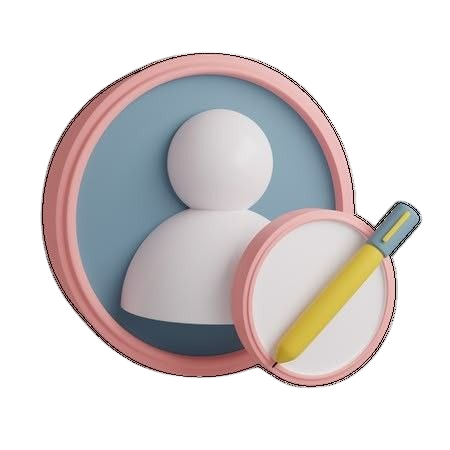
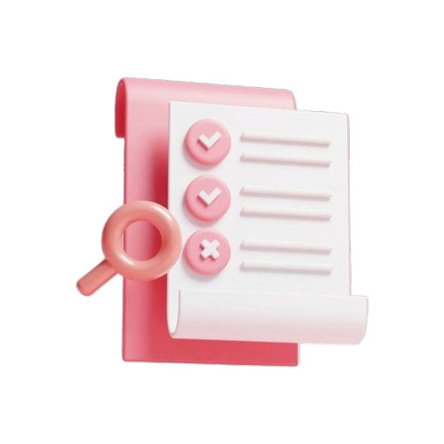
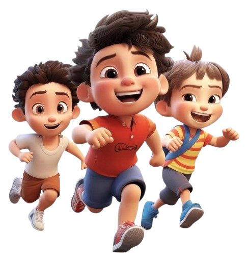

Часті питання (FAQ)
Як змінити стиль навчання, якщо він мені не підходить?

Перепройти тест ще раз
Чи можу я проходити уроки у змішаному форматі?
Так

Як працюють рекомендації?
Платформа підлаштовується під вас

Чи можна пройти тест кілька разів?
Безліч
Чи отримаю я сертифікат після проходження курсу?
Так
Футер
FAQ для батьків
Що таке наша платформа?
Це навчальний простір, який підлаштовується під нейродивергентних учнів.
Інтерактивний підхід замість традиційного навчання.
Використання різних стилів сприйняття інформації.
Чим ми відрізняємося від інших платформ?
Система рекомендацій та підтримки мотивації.
Контент змінюється в залежності від взаємодії дитини.
Динамічне коригування матеріалів у реальному часі.
Адаптивне навчання
Як працює адаптивне навчання?
Якщо уникає відео – додається більше текстової інформації.
Якщо швидко проходить тест – підвищується складність завдань.
Якщо дитина не читає текст – більше аудіо.
Навчання стає більш комфортним і ефективним.
Підлаштовується під темп навчання кожної дитини.
Навчання стає більш комфортним і ефективним.
Як визначити стиль навчання моєї дитини?
Дитина проходить тест (10 питань).
Платформа аналізує відповіді.
Пропонує найкращий формат подачі матеріалу.

Можна змінити стиль навчання вручну в налаштуваннях.

Програма сама коригує формат на основі активності.
Методика для дітей з аутизмом, СДУГ, дислексією
✅ Для дітей з аутизмом – мінімум зайвих стимулів, чітка структура.
✅ Для дітей з СДУГ – гейміфікація та мотиваційні нагороди.
✅ Для дітей з дислексією – аудіоформат та спеціальні шрифти.
Що ще важливо знати?
Відстеження прогресу дитини
✅ Теми, які дитина вже пройшла.
✅ Рекомендації щодо повторення матеріалу.
✅ Час, витрачений на навчання.
Чи можна отримати звіти?
Так, є можливість щотижневих e-mail-звітів про навчання дитини.
Контроль з боку батьків
✅ Автономне навчання – дитина вчиться самостійно, платформа її веде.
✅ Навчання з підтримкою батьків – ви можете допомагати та перевіряти прогрес.
Чи можуть батьки впливати на матеріали?
Домашнє навчання
Платформа сама адаптує теми для дитини.
Є рекомендації щодо розкладу занять.
Контент доступний у будь-який час.
Чи можна використовувати разом із шкільною програмою?